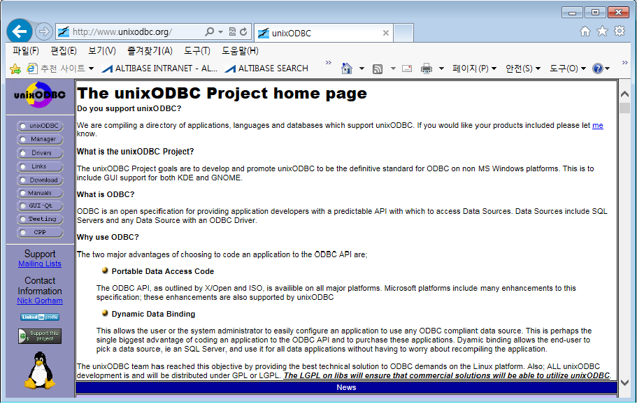

unixODBC Manager를 사용하기 위해서는 해당 제품의 바이너리를 플랫폼에 맞게 생성해야 한다. 각 단계별로 필요한 부분을 설명한다. 컴파일러는 기본적으로 Native 컴파일러를 쓰는 것으로 가정하며 gcc/g++의 경우는 특별히 주의할 옵션이 없음으로 설명을 생략한다. (단, 32/64bit의 생성시 동일하게 컴파일 옵션은 주의해서 써야 한다.)
unixODBC Manager 다운로드
다음의 웹 주소에서 다운로드 받을 수 있다

- http://www.unixodbc.org -> 화면 좌측의 Download 클릭 -> Download 버튼 클릭을 통해 소스를 다운받도록 한다.
다운로드 받은 제품은 다음과 같은 형태의 압축파일이다.
unixODBC-2.3.2.tar.gz
unixODBC Manager 의 설치
unixODBC의 설치를 위해서 다음과 같은 과정을 수행한다.
1. 소스의 압축해제
소스를 적절한 경로에서 압축을 해제한다.
Shell> mkdir install Shell> cd install Shell> gzip -dc unixODBC*.gz | tar xvf -
2. 컴파일용 환경변수 설정
사용할 odbc driver의 bit 확인
Shell> file $ALTIBASE_HOME/lib/libaltibase_odbc* /altibase_home/lib/libaltibase_odbc-64bit-ul32.so: ELF 64-bit LSB shared object, x86-64, version 1 (SYSV), dynamically linked, not stripped /altibase_home/lib/libaltibase_odbc-64bit-ul64.so: ELF 64-bit LSB shared object, x86-64, version 1 (SYSV), dynamically linked, not stripped
확인된 비트를 기준으로 unixODBC Manager를 32/64bit 중 어떤 bit 로 컴파일 할지를 결정해야 한다. 여기서 주의할 점은 odbc driver 파일 이름에 포함된 ul32/ul64 가 odbc driver 의 파일 bit를 의미하지 않는 점이다. ul32 는 SQLLEN=4byte(32bit) 를 사용하는 Driver 란 의미이고 ul64는 SQLLEN=8byte(64bit) 를 사용하는 Driver 라는 의미이다. 파일의 bit 타입은 위 명령어 실행 결과중에 ELF 64-bit , ELF 32-bit 에 따라서 구분한다.
SQLLEN 및 SQLULEN type의 크기 설정
SQLEN 과 SQLULEN type은 unixodbc function 의 파라미터 변수 type 선언시 사용된다. SIZEOF_LONG_INT 크기에 따라서 SQLEN 과 SQLULEN 의 크기가 32bit 일지 64bit 일지 결정된다. SQLLEN /SQLULEN 크기는 기본적으로 32bit OS에서는 32bit 이고 64bit OS에서는 64bit 로 선언된다.
64bit OS에서 SQLLEN/SQLULEN을 32bit(4byte) 로 사용하기 위해서는 아래의 컴파일 환경변수 선언을 하면 된다.
export CFLAGS=-DBUILD_LEGACY_64_BIT_MODE=1
위와 같이 BUILD_LEGACY_64_BIT_MODE=1 로 설정된 경우 SQLLEN 은 32bit(4byte) 크기를 사용하도록 컴파일 된다.
SQLLEN /SQLULEN type 크기를 반드시 32bit로 사용할 것
unixodbc 컴파일 bit 종류 선택
컴파일 환경변수를 통해서 unixodbc 를 32bit 또는 64bit 로 선택적으로 컴파일할 수 있다. 64bit OS에서 default로 64bit 로 컴파일된다. 64bit OS에서 32bit 프로그램으로 unixodbc를 컴파일 하기 위해서는 아래와 같이 설정한다.
export CFLAGS=<32/64bit 컴파일옵션> export LDFLAGS=<32/64bit 컴파일옵션> export CC=<C컴파일러> export CXX=<C++컴파일러>
각 플랫폼 별로 설정할 환경변수들은 아래와 같다.
| 구분 | AIX | HP | SUN |
|---|---|---|---|
CC | /usr/vac/bin/xlc | /opt/aCC/bin/aCC | /opt/SUNWspro/bin/cc |
CXX | /usr/vacpp/bin/xlC_r | /opt/aCC/bin/aCC | /opt/SUNWspro/bin/CC |
CFLAGS LDFLAGS | -q64 (64bit) | +DD64 (64bit) | -xarch=v9 (64bit) |
LD |
|
| /opt/SUNWspro/bin/CC |
64bit 컴파일 | 환경변수에 OBJECT_MODE=64 | CFLAGS에 "+DD64 -DBUILD_REAL_64_BIT_MODE" 추가한다. | LD_LIBRARY_PATH_64에 "/usr/lib/64" 및 "/usr/ucblib/sparv9"을 설정한다. |
컴파일러의 경우는 사용자가 설치한 경로에 따라서 경로가 바뀔 수 있음으로 대상 장비에 설치된 경로는 사용자가 확인하여야 한다.
CFLGAS 및 LDFLAGS의 옵션도 32/64bit 컴파일 옵션에 따라 다르게 지정하도록 한다. (ELF class 오류가 발생할 수 있음)
Linux 64bit OS에서 unixodbc를 32bit로 컴파일 하기 위한 컴파일 환경변수 예
export CFLAGS="-m32 -DBUILD_LEGACY_64_BIT_MODE=1" export LDFLAGS=-m32 export CXXFLAGS=-m32
위와 같이 선언한 후 이후의 컴파일 과정을 거치면 SQLLEN 크기가 4byte(32bit) 이며 실행파일의 bit 수가 32bit 인 unixodbc가 컴파일된다.
3. make 를 위한 configuration 과정
configuration을 수행한다. 여기서는 설치할 디렉토리 및 make과정에 필요한 몇 가지 옵션을 설정한다.
Shell> ./configure –prefix=/home/unixODBC –-disable-gui --enable-threads=yes checking for a BSD-compatible install..../install-sh -c checking whether build environment is sane... yes checking for gawk... gawk checking whether make sets $(MAKE)... yes …….
configuration 단계에서는 컴파일을 수행하기 위한 제반 환경을 체크하기 때문에 에러가 발생할 경우 필요한 바이너리 등은 직접 설치해야 한다 unixODBC가 설치된 디렉토리는 prefix 인자값으로 설정된 경로에 설치된다. 예를 들어서 prefix=/home/unixODBC 일 경우 install 작업후에 unixODBC는 /home/unixODBC 에 최종적으로 설치된다.
4. 컴파일 수행
make 수행
Shell> make source='lstDelete.c' object='lstDelete.lo' libtool=yes \DEPDIR=.deps depmode=none /bin/bash ../depcomp \ -mt -c -o lstDelete.lo lstDelete.c …… make[1]: Leaving directory `/home/unixODBC-2.3.2/samples' make[1]: Entering directory `/home/unixODBC-2.3.2' make[1]: Nothing to be done for `all-am'. make[1]: Leaving directory `/home/unixODBC-2.3.2'
AIX의 경우 운영체제의 패치레벨에 따라 컴파일이 오류가 나는 경우가 있는 것으로 추정되는 경우가 있다
make install 수행
make 가 끝나면 make instal 수행을 통해서 컴파일이 완로된 바이너리 파일들이 설치 디렉토리에 설치 되도록 한다. 앞서 configuration단계에서 지정한 prefix디렉토리에 설치되기 때문에 사전에 해당 디렉토리에 대한 접근권한이 있어야 한다
Shell> make install ….. mkdir -p /home/unixODBC/etc/ODBCDataSources /home/unixODBC/bin/odbc_config --header > /home/unixODBC/include/unixodbc_conf.h make[2]: Leaving directory `/home/unixODBC-2.3.2' make[1]: Leaving directory `/home/unixODBC-2.3.2'
정상 설치여부 확인
설치 후 정상적으로 library를 로딩하는지 확인한다
Shell> cd /home/unixODBC/bin Shell> ./dltest $ALTIBASE_HOME/lib/libaltibase_odbc-64bit-ul32.so SUCCESS: Loaded /home/altibase_home/lib/libaltibase_odbc-64bit-ul32.so
dltest 실행파일은 unixODBC가 설치된 디렉토리의 bin 아래에 위치한다. 위와 같이 정상적으로 unixODBC Manager가 설치되면 ALTIBASE가 제공하는 unix용 ODBC driver에 대한 dltest가 정상적으로 성공해야 한다.
{kind=link}